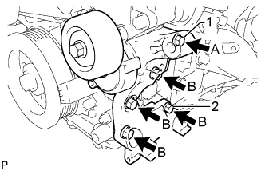
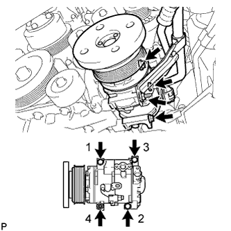
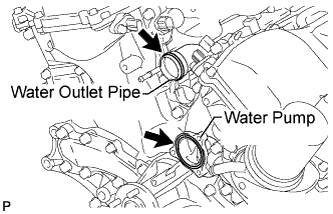
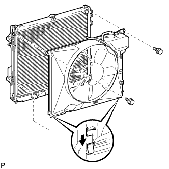
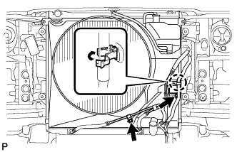
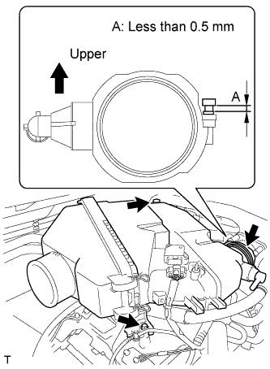
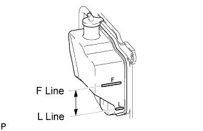

WATER PUMP > INSTALLATION |
| 1. INSTALL WATER PUMP ASSEMBLY |
 |
Install a new gasket and the water pump with the 17 bolts.
| 2. INSTALL V-RIBBED BELT TENSIONER ASSEMBLY |
 |
Temporarily install the V-ribbed belt tensioner with the 5 bolts.
Tighten bolt 1 and 2 in numerical order.
Tighten the other bolts.
| Item | Length |
| A | 70 mm (2.76 in.) |
| B | 33 mm (1.30 in.) |
| 3. CONNECT COOLER COMPRESSOR ASSEMBLY |
Fix the cooler compressor in place with the stud bolt.
 |
Install the cooler compressor with the nut and 3 bolts in several steps in the sequence shown in the illustration.
Connect the cooler compressor connector.
| 4. INSTALL GENERATOR ASSEMBLY |
 |
Install the generator with the 2 bolts.
 |
Connect the wire harness clamp bracket with the bolt.
Install the wire harness clamp to the bracket.
Connect the generator wire with the nut.
Install the terminal cap.
Connect the generator connector.
 |
Connect the wire harness clamp bracket with the nut.
| 5. INSTALL NO. 2 IDLER PULLEY SUB-ASSEMBLY |
 |
Install the 2 idler pulleys and 2 cover plates with the 2 bolts.
| 6. INSTALL WATER INLET HOUSING |
 |
Install a new gasket to the water outlet pipe.
Install a new gasket to the water pump.
Apply soapy water to the gasket of the water outlet pipe.
 |
Install the water inlet with the 5 bolts.
 |
Connect the 5 water by-pass hoses.
 |
Connect the 2 oil cooler hoses.
| 7. INSTALL FAN SHROUD |
Install the fan pulley to the water pump.
Place the shroud together with the coupling fan between the radiator and engine.
Temporarily install the fluid coupling fan to the water pump with the 4 nuts. Tighten the nuts as much as possible by hand.
 |
Attach the claws of the shroud to the radiator as shown in the illustration.
Install the shroud with the 2 bolts.
Connect the reservoir hose to upper side of the radiator tank upper.
Install the fan and generator V-belt (Click here).
Tighten the 4 nuts of the fluid coupling fan.
| 8. CONNECT OIL COOLER TUBE (w/ Air Cooled Transmission Oil Cooler) |
 |
Connect the oil cooler tube with the 2 bolts, and attach the claw to close the flexible hose clamp.
| 9. INSTALL NO. 2 RADIATOR HOSE |
 |
Install the radiator hose.
| 10. INSTALL NO. 1 RADIATOR HOSE |
 |
Install the radiator hose.
| 11. INSTALL AIR CLEANER ASSEMBLY |
 |
Install the air cleaner assembly with the 2 bolts.
Tighten the hose clamp.
 |
Connect the MAF meter connector.
Attach the 2 wire harness clamps.
Connect the vacuum hose.
 |
Attach the hose clamp.
Connect the No. 2 ventilation hose.
| 12. INSTALL NO. 2 AIR CLEANER HOSE |
 |
Align the protrusion of the pre-cleaner with the groove of the No. 2 air cleaner hose as shown in the illustration.
 |
Tighten the 2 hose clamps.
| 13. ADD ENGINE COOLANT |
Add engine coolant.
| Item | Specified condition | |
| for Automatic transmission | w/o Rear Heater | 11.2 liters (11.8 US qts, 9.9 Imp. qts) |
| w/ Rear Heater | 14.4 liters (15.2 US qts, 12.7 Imp. qts) | |
| for Manual transmission | w/o Rear Heater | 12.0 liters (12.7 US qts, 10.6 Imp. qts) |
| w/ Rear Heater | 14.6 liters (15.4 US qts, 12.8 Imp. qts) | |
 |
Slowly pour coolant into the radiator reservoir until it reaches the F line.
Install the reservoir cap.
Press the No. 1 and No. 2 radiator hoses several times by hand, and then check the coolant level. If the coolant level is low, add coolant.
Install the radiator cap.
Set the air conditioning as follows while warming up the engine.
| Item | Condition |
| Fan speed | Any setting except off |
| Temperature | Toward WARM |
| Air conditioning switch | Off |
Start the engine and warm it up until the thermostat opens.
Maintain the engine speed at 2000 to 2500 rpm.
Press the No. 1 and No. 2 radiator hoses several times by hand to bleed air.
Stop the engine, and wait until the engine coolant cools down to ambient temperature.
 |
Check that the coolant level is between the F and L lines.
If the coolant level is below the L line, repeat all of the procedures above.
If the coolant level is above the F line, drain coolant so that the coolant level is between the F and L lines.
| 14. INSPECT FOR COOLANT LEAK |
 |
Fill the radiator with coolant and attach a radiator cap tester.
Warm up the engine.
Using the radiator cap tester, increase the pressure inside the radiator to 123 kPa (1.3 kgf/cm2, 18 psi), and check that the pressure does not drop.
If the pressure drops, check the hoses, radiator and water pump for leaks. If no external leaks are found, check the heater core, cylinder block and head.
| 15. INSTALL UPPER RADIATOR SUPPORT SEAL |
 |
Install the radiator support seal with the 7 clips.
| 16. INSTALL V-BANK COVER |
 |
Install the V-bank cover with the 2 cap nuts.
| 17. INSTALL NO. 1 ENGINE UNDER COVER SUB-ASSEMBLY |
 |
Install the under cover with the 10 bolts.
| 18. INSTALL FRONT FENDER SPLASH SHIELD SUB-ASSEMBLY RH |
| 19. INSTALL FRONT FENDER SPLASH SHIELD SUB-ASSEMBLY LH |
 |
Push in the clip indicated by the arrow in the illustration to install the fender splash shield.
Install the 3 bolts and screw.